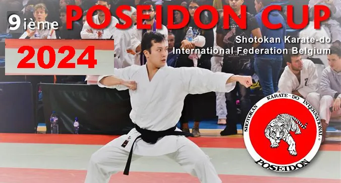

Prochainement Compétition Nationale 15/12/2024
SKIF POSEIDON CUP 2024
Evènements au complexe Poséidon de 9h à 18h
Complexe sportif du Poséidon Avenue des Vaillants, 2 1200 BruxellesTitre d’origine : « SKIF Poseidon CUP 2024 15/12/2024 »

Prochainement Compétition Nationale 15/12/2024
SKIF POSEIDON CUP 2024
Evènements au complexe Poséidon de 9h à 18h
Complexe sportif du Poséidon Avenue des Vaillants, 2 1200 Bruxelles